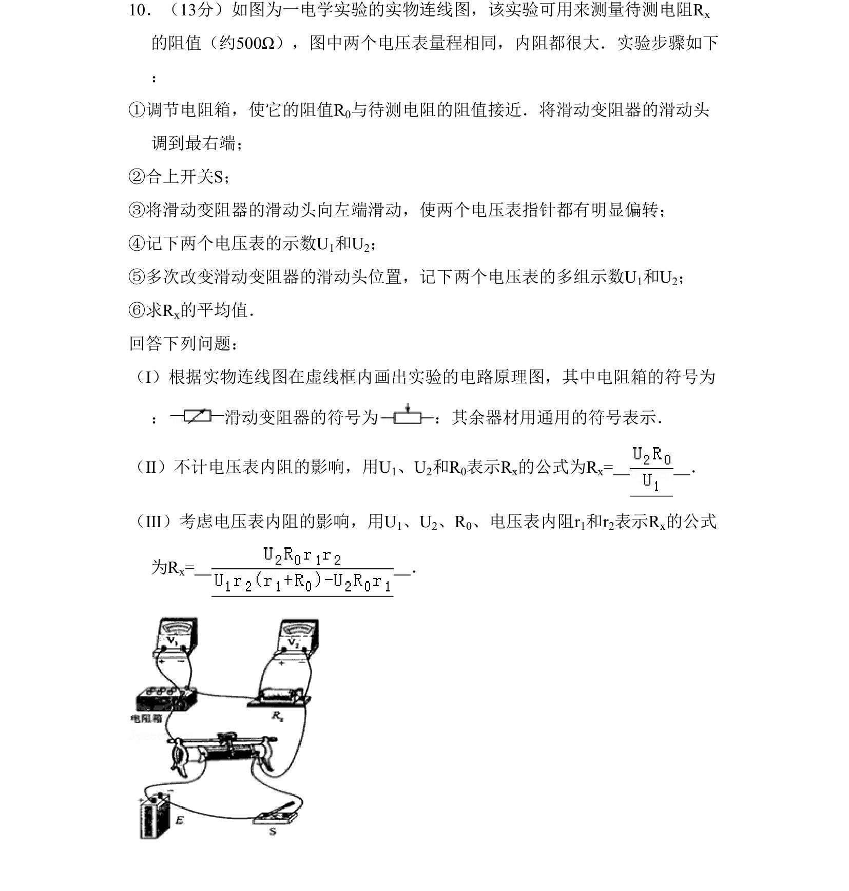
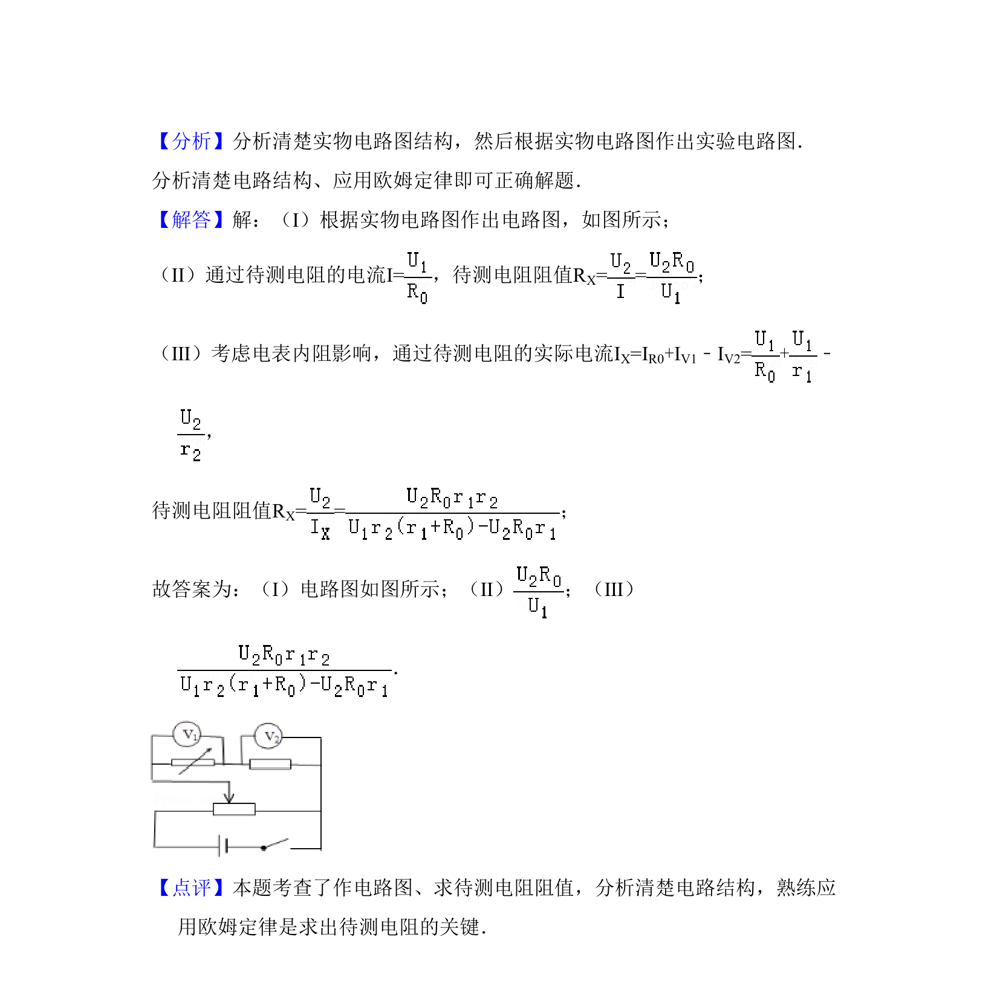

考点：伏安法测电阻 电路原理图 欧姆定律 误差分析

该题考查电学实验测量电阻，要求画电路原理图并推导含电压表内阻影响的电阻计算公式

📄 原 PDF 第 9 页：
素材/真题/吉林/2008-2024·（吉林）物理高考真题/2008年高考物理试卷（全国卷Ⅱ）（解析卷）.pdf
10．（13分）如图为一电学实验的实物连线图，该实验可用来测量待测电阻Rx 的阻值（约500Ω），图中两个电压表量程相同，内阻都很大．实验步骤如下 ： ①调节电阻箱，使它的阻值R0与待测电阻的阻值接近．将滑动变阻器的滑动头 调到最右端； ②合上开关S； ③将滑动变阻器的滑动头向左端滑动，使两个电压表指针都有明显偏转； ④记下两个电压表的示数U1和U2； ⑤多次改变滑动变阻器的滑动头位置，记下两个电压表的多组示数U1和U2； ⑥求Rx的平均值． 回答下列问题： （Ⅰ）根据实物连线图在虚线框内画出实验的电路原理图，其中电阻箱的符号为 ： 滑动变阻器的符号为 ：其余器材用通用的符号表示． （Ⅱ）不计电压表内阻的影响，用U1、U2和R0表示Rx的公式为Rx= ． （Ⅲ）考虑电压表内阻的影响，用U1、U2、R0、电压表内阻r1和r2表示Rx的公式 为Rx= ．
【考点】N6：伏安法测电阻．菁优网版权所有 【专题】535：恒定电流专题．